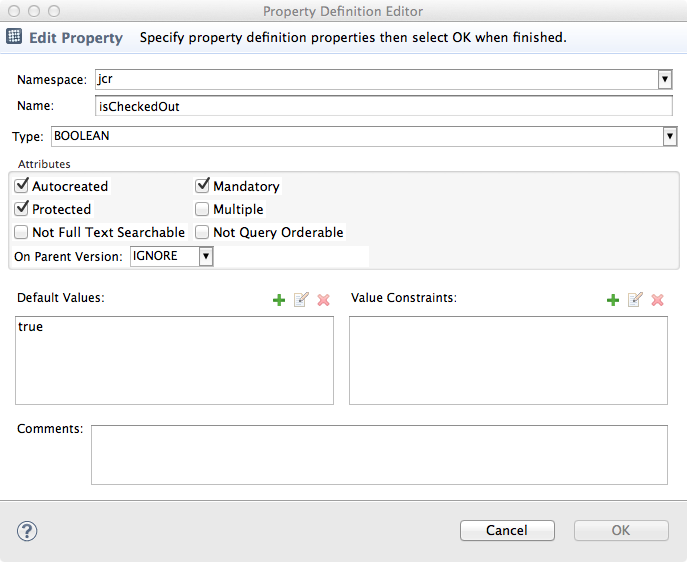

|
|
ModeShape Tools - CND Editor |
The Property Editor is used to create and modify property definitions.
Here is what the Property Editor looks like:
The editor consists of the following:
| Header Section | shows information and validation error messages |
| Namespace | the prefix of the associated namespace mapping |
| Name | the unqualified JCR name or '*' to indicate the definition is residual |
| Type | the property type |
| Autocreated Attribute | indicates if a property of this type will be automatically created |
| Mandatory Attribute | indicates if a property of this type must be present in the declaring node type |
| Multiple Attribute | indicates if properties of this type can have multiple values |
| Not Full Text Searchable | indicates if properties of this type are not full text searchable |
| Not Query Orderable | indicates if query results cannot be ordered by this property |
| On-Parent-Version Attribute | indicates what happens to properties of this type when a new version of the parent is created |
| Protected Attribute | indicates if properties of this type are protected from being deleted |
| Default Values | zero or more values used as default values for multi-valued properties |
| Value Constraints | zero or more constraints used to validate property values |
| Comments | additional information about this property definition that is saved to the file |
Once all required information is filled in and validated, the 'Finish' button will be enabled and the new property definition can be created or changed. The new or changed property definition will appear in the CND editor's property definitions table. The Property Definition Editor can be opened from the property definitions table by either:
Add Property toolbar button, orEdit Property toolbar button